第 2 讲：纵览游戏引擎的分层架构
用“分层”这把刀把庞大的引擎代码切开，看清每一层该放什么、为什么这样放
◆ 学完这一讲，你应该能
能画出游戏引擎的五层架构（工具层、功能层、资源层、核心层、平台层）并说出每层的职责
能解释“下层稳定、上层多变”为什么是分层的第一原则，并能用它判断一段代码该放哪层
能描述资源从 DCC 导出到运行时加载的完整链路，理解 .ast、GUID、句柄、生命周期管理的作用
能说清游戏循环（tick）如何驱动动画、渲染、物理等系统，并理解多线程下渲染线程与逻辑线程的分工
能列举核心层（数学、容器、内存管理）与平台层（文件系统、RHI、硬件架构）的关键设计点
能对照 UE/Unity 的模块划分，把本讲的分层概念映射到真实引擎的目录与子系统上
核心结论速记
游戏引擎采用分层架构：工具层 → 功能层 → 资源层 → 核心层 → 平台层，越往下越稳定、越往上越可定制。
分层的目的是解耦与降低复杂度：下层不知道上层是谁，上层不关心下层的实现细节。
资源层用元资产文件（.ast）、GUID、句柄系统和生命周期管理，把“磁盘上的文件”变成“运行时可安全引用的对象”。
功能层由游戏循环（game loop）驱动，每个 tick 依次推进动画、物理、逻辑、渲染等子系统；渲染通常跑在独立线程。
核心层是引擎的地基：数学库（向量/矩阵/四元数）、自定义容器、内存池与缓存友好设计，直接决定性能上限。
平台层负责屏蔽操作系统、图形 API、硬件架构差异，向上提供与平台无关的服务（文件系统、RHI）。
工具层（编辑器、DCC 管线）让非程序员也能创作内容，是引擎“可用性”的关键。
Pilot 迷你引擎按同样的分层实现，是理解本讲概念的最佳实践样本。
011. 为什么要分层：从“代码海洋”到五层结构
打开一个商业引擎的源码目录，第一反应通常是“代码海洋，从哪下手？”。课件用这个问题开场，给出的答案是：分层（layered architecture）。
把引擎想象成一栋楼：地基（平台层）埋在地下，承重墙（核心层）支撑整体，水电管线（资源层）贯穿各层，房间功能（功能层）按用途划分，最后是装修与家具（工具层）——住户只看见装修，但整栋楼的稳定取决于地基。
课件给出的五层从下到上是：
- 平台层（Platform Layer）：操作系统、文件系统、图形 API、输入设备、主机与发行平台。
- 核心层（Core Layer）：数学库、数据结构与容器、内存管理。
- 资源层（Resource Layer）：资源导入、运行时资源管理、生命周期。
- 功能层（Function Layer）：渲染、相机、动画、物理、脚本、AI、游戏循环。
- 工具层（Tool Layer）：各类编辑器（关卡、动画、着色器、UI）、DCC 管线。
此外还有两个“横切”角色：第三方库（3rd Party Libraries） 和 中间件（Middleware），它们被各层按需调用，不单独占一层。
分层的两条铁律在课件最后总结：下层独立于上层（下层不知道上层存在），上层不知道下层的实现（只依赖接口）。这带来两个好处：下层稳定，可以长期不动的代码放下面；上层多变，玩法、编辑器需求天天变，放上面改起来不影响地基。
判断一段代码放哪层，问自己两个问题：它依赖操作系统/硬件吗？它会被玩法或编辑器频繁改动吗？前者往下放，后者往上放。
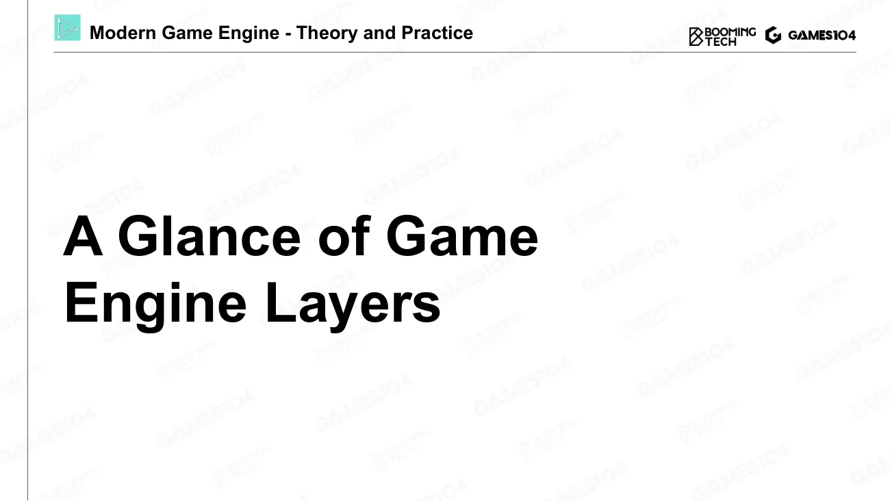
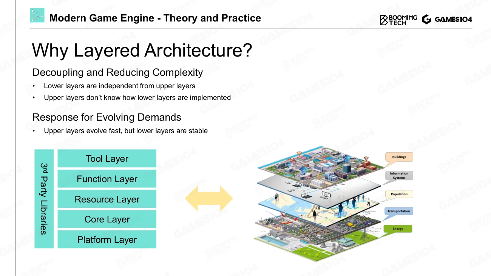
补充说明
课件用“Sea of Codes”强调：分层是阅读引擎源码的地图，先定位层，再定位模块。
常见坑
把玩法逻辑写进核心层工具函数 → 核心层被频繁改动、编译变慢、复用性下降 → 玩法逻辑应放在功能层或脚本层。
上层直接调用平台 API（如直接写 DirectX）→ 换平台时到处改 → 必须经过平台层封装的 RHI。
UE / Unity 落地
UE 的模块划分与分层高度对应：
Engine/Source/Runtime/Core对应核心层，RHI对应平台层图形抽象，Engine/Source/Editor对应工具层。Unity 中
UnityEngine.CoreModule类似核心层，UnityEngine.Rendering类似功能层，编辑器扩展（Editor 文件夹）属于工具层。
022. 资源层：把磁盘文件变成运行时能安全引用的资产
资源层要回答的问题是：如何离线访问我的数据？ 课件把资源管线拆成三段。
第一段：资源导入（Resource Importing）。 美术在 DCC（Maya、Blender、Photoshop）里产出的原始文件格式五花八门，引擎不直接读它们，而是导入成统一的元资产文件格式（meta asset，如 .ast）。导入时做预处理（压缩纹理、烘焙骨骼、合并材质），所以运行时读取更快。多个 .ast 再打包成复合资产文件（composite asset file），一次 IO 就能拿到一组资源。引用关系用 GUID 标识，而不是用路径字符串——路径会改名、会移动，GUID 不会，这是“额外的一层保护”。
第二段：运行时资源管理（Runtime Asset Manager）。 课件给出两个核心机制：
- 虚拟文件系统（virtual file system）：按路径引用加载/卸载资源，屏蔽真实磁盘结构。
- 句柄系统（handle system）：管理资源生命周期与引用计数。课件用“Handle vs Post Address”作类比——你手里拿的是邮箱编号（句柄），不是房子本身（内存地址）；房子可以搬家，编号不变。
第三段：生命周期管理（Life Cycle）。 不同资源寿命不同：角色资源可能整局都在，过场动画（cutscene）资源播完就该释放。内存有限，所以需要垃圾回收（garbage collection） 与延迟加载（deferred loading）。
一句话总结：资源层把“文件”抽象成“可引用、可计数、可回收的对象”，让上层不用关心磁盘和内存细节。
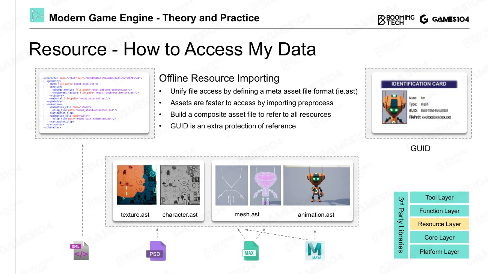
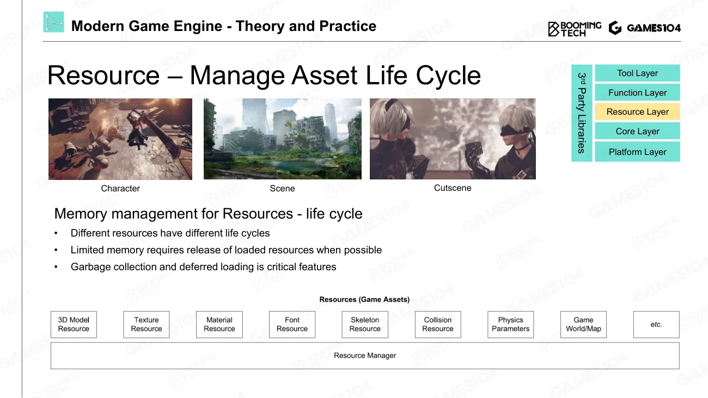
补充说明
课件中 .ast 是 Pilot 引擎的示例格式，不同引擎后缀不同，但“导入预处理 + GUID + 句柄”的思路是通用的。
常见坑
用路径字符串做资源引用 → 改名/移动后引用断裂 → 改用 GUID 或引擎的资源引用类型（UE 的
FSoftObjectPath/TSoftObjectPtr）。资源加载后忘记释放 → 内存持续上涨、切场景卡顿 → 用句柄/引用计数管理，或依赖引擎的 GC。
在 tick 里同步加载大资源 → 帧率骤降 → 改用异步加载或延迟加载。
UE / Unity 落地
UE 的
.uasset相当于课件里的.ast，PrimaryAssetId/FAssetRegistry对应 GUID 与资源注册表，TSoftObjectPtr是典型的延迟加载句柄。Unity 的
.meta文件保存 GUID，Addressables系统对应运行时资源管理与引用计数。
033. 功能层：用 tick 让世界“活”起来
功能层是引擎的“肌肉”：渲染、相机、动画、物理、脚本、AI、输入。课件用一句很朴素的话概括：让世界可见、可动、可玩。
所有这些系统怎么协同？答案是游戏循环（game loop）。课件给了一段极简伪代码：
// game_main.cpp
void tick(int delta_time) {
input.poll();
logic.update(delta_time);
animation.update(delta_time);
physics.step(delta_time);
renderer.render();
}
while (true) { tick(delta_time); }
看起来“难以置信地简单”，但这就是引擎的心跳。每个 tick 里：
- 取一帧动画数据，驱动角色骨骼与蒙皮；
- 物理步进；
- 逻辑（脚本/AI）更新；
- 渲染器处理本帧所有渲染任务。
课件特别指出：游戏循环是阅读引擎源码的关键入口——找到主循环，就找到了所有系统的调用顺序。
真实引擎不会这么线性。课件展示了多线程版本：主线程（Entry）负责逻辑，逻辑线程（LogicThread） 跑 Lua/AI/动画/物理/粒子，渲染线程（RenderThread） 独立跑可见性、GBuffer、阴影、光照、透明、后处理、UI。渲染线程通常比逻辑线程晚一帧或半帧，用双缓冲/命令队列同步。
功能层还有一个特点：它模糊了引擎与游戏的边界。相机、角色、行为既是引擎能力，也是玩法内容，所以引擎要设计可扩展的 API 给程序员用。
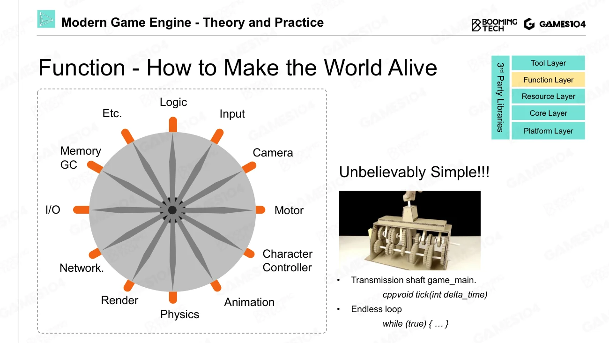
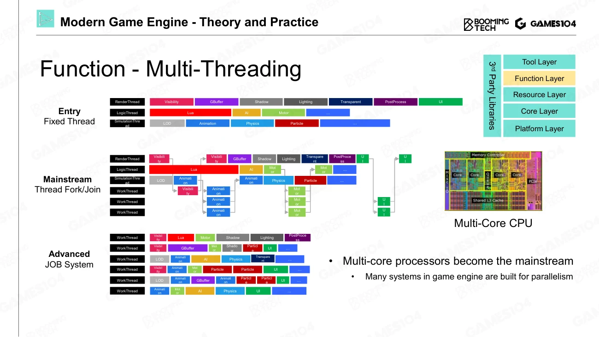
补充说明
课件强调“over-simplified version”，真实引擎的 tick 有大量并行、延迟、优先级细节。
常见坑
在渲染线程里直接改游戏逻辑数据 → 数据竞争、画面撕裂 → 逻辑线程产出渲染命令/快照，渲染线程只读。
tick 里用固定 delta_time 而非真实帧间隔 → 高帧率下游戏变快、低帧率下变慢 → 用真实 delta_time，必要时做固定步长物理。
把所有系统塞进一个 tick 顺序执行 → 无法利用多核 → 按依赖关系拆分到逻辑/渲染/模拟线程。
UE / Unity 落地
UE 的
UWorld::Tick就是游戏循环，TickGroup控制 Actor 的更新顺序；渲染线程通过ENQUEUE_RENDER_COMMAND提交命令。Unity 的
MonoBehaviour.Update/FixedUpdate/LateUpdate对应逻辑 tick 的不同阶段，FixedUpdate用于物理固定步长。
极简 tick 伪代码（对应课件 P14）（cpp）
void tick(float delta_time) {
input.poll();
logic.update(delta_time);
animation.update(delta_time);
physics.step(delta_time);
renderer.render();
}
while (running) {
float dt = clock.delta();
tick(dt);
}044. 核心层：数学、容器与内存——性能的地基
核心层不直接实现玩法，但决定了引擎性能的上限。课件列了三块。
数学库（Math Library）。 线性代数：旋转、平移、缩放，矩阵、样条（splines）、四元数（quaternion）。四元数用于避免万向节死锁，是骨骼动画与相机的标配。
数学效率（Math Efficiency）。 课件举了 Quake III 的经典例子：Carmack's 1/sqrt(x) 用“魔数（magic number）”加牛顿迭代快速求平方根倒数。今天 CPU 有 SIMD 指令，但“用近似换速度”的思路仍在（如半精度浮点、快速三角函数）。
数据结构与容器（Data Structure and Containers）。 课件列出骨架树（skeleton tree）、动画帧序列、向量/映射/树等。关键结论：自定义容器往往优于 STL，并且要避免内存碎片（fragment memory）。
内存管理（Memory Management）。 课件把内存称为“引擎性能的主要瓶颈”，给出几条实践：
- 内存池/分配器（Memory Pool / Allocator）：批量分配，减少系统调用。
- 减少缓存未命中（cache miss）：把数据放一起（put data together），按顺序访问（access data in order），利用缓存局部性（cache locality）。
- 内存对齐（memory alignment）：SIMD 与缓存行友好。
- 内存竞技场（Memory Arena）：一整块分配、整块释放，适合帧级临时数据。
- 多态内存资源（PMR）：C++17 的
std::pmr，让容器可指定分配器。
一句话：核心层用“超级高性能的设计与实现”和“高标准的编码”支撑所有功能模块。
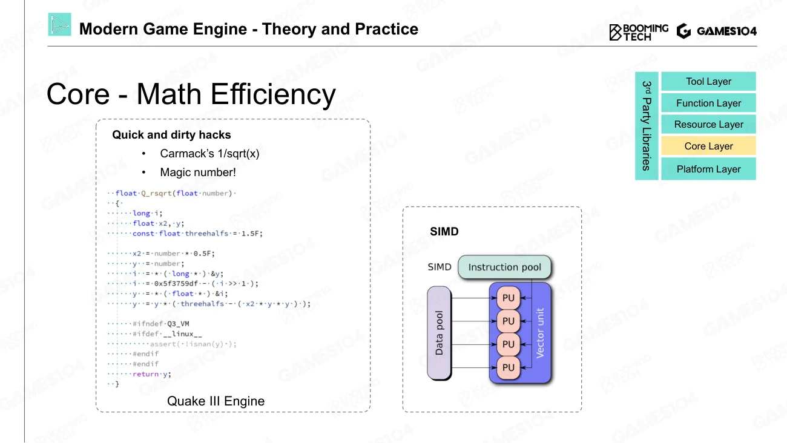
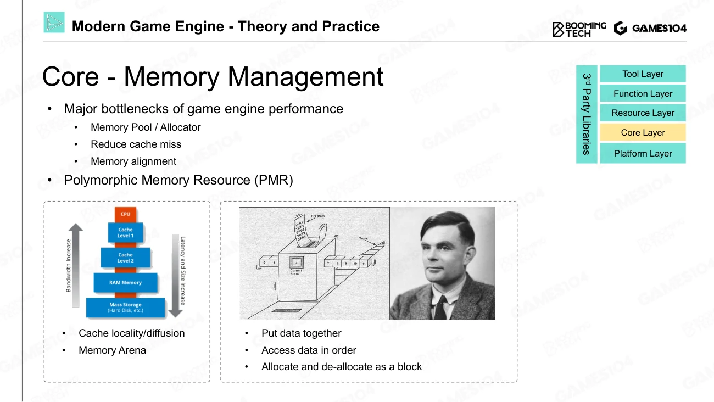
补充说明
课件把核心层称为“Foundation of Game Engine”，并强调编码标准高于普通业务代码。
常见坑
每帧 new/delete 大量小对象 → 内存碎片、分配器锁竞争、帧率抖动 → 改用内存池或帧级 Arena。
容器里存指针而非值 → 缓存未命中率高、遍历慢 → 用连续内存容器（如
std::vector）存值，必要时用 SOA 布局。四元数未归一化 → 旋转出现缩放/漂移 → 每次插值后 normalize。
UE / Unity 落地
UE 的
FVector/FQuat/TArray就是核心层数学与容器；FMemory提供内存池与对齐分配。Unity 的
Unity.Collections（NativeArray）与 Burst 编译器强调缓存友好与 SIMD，思路与课件一致。
055. 平台层：把操作系统、图形 API 和硬件差异关进笼子
平台层的职责是：面向不同平台，向上层提供与平台无关的服务与信息。课件分三块。
文件系统（File System）。 不同平台路径分隔符不同（Windows 反斜杠 \，Unix 正斜杠 /），还有环境变量、目录遍历差异。平台层统一这些细节，上层只写“逻辑路径”。
图形 API（Graphics API）。 课件提出 RHI（Render Hardware Interface，渲染硬件接口）：用一层抽象透明化不同 GPU 架构与 SDK（DirectX、Vulkan、Metal、主机私有 API），并做目标平台的自动优化。上层渲染器只调 RHI，不直接调 D3D/Vulkan。
硬件架构（Hardware Architecture）。 课件提到主机特有的 PPU/SPU（Cell 处理器）与 UMA（统一内存访问，unified memory access）。UMA 下 CPU/GPU 共享内存，拷贝策略与独立显存不同，平台层要暴露这些差异。
平台层还包括输入设备、主机认证、发行平台（Steam/主机商店）等。它的设计原则是兼容性优先：宁可多一层封装，也不让上层感知平台差异。
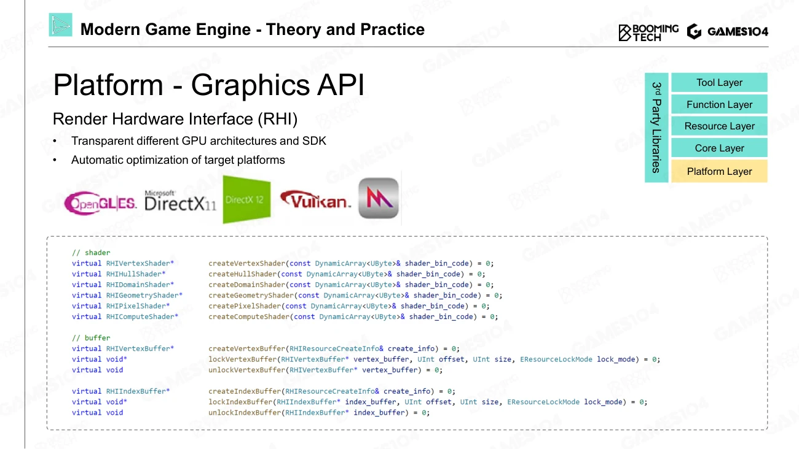
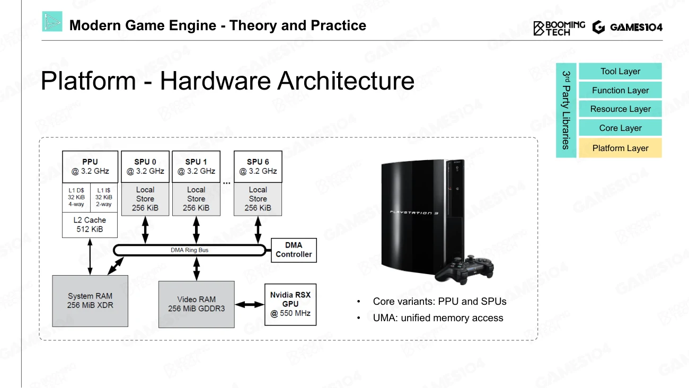
补充说明
课件用“Time to show off”调侃路径分隔符差异，说明这类小问题在跨平台时最容易被忽略。
常见坑
在业务代码里硬编码路径分隔符 → Linux/Mac 上找不到文件 → 用平台层提供的路径拼接 API。
渲染代码直接调 D3D12 → 换 Vulkan/Metal 时重写 → 一律走 RHI 接口。
假设 CPU/GPU 内存独立 → 在 UMA 主机上多做一次无谓拷贝 → 平台层按 UMA 标志选择零拷贝路径。
UE / Unity 落地
UE 的 RHI 模块（
Engine/Source/Runtime/RHI）以及FGenericPlatformFile/IPlatformFile就是平台层封装。Unity 的
SystemInfo与GraphicsDeviceType用于查询平台能力，渲染管线通过CommandBuffer抽象图形 API。
066. 工具层与第三方库：让非程序员也能创作
工具层的目标是 释放创造力（Unleash the Creativity）：让策划、美术、TA 不写引擎代码也能做游戏。课件列出编辑器家族：关卡编辑器（Level Editor）、动画编辑器（Animation Editor）、着色器编辑器（Shader Editor）、UI 编辑器（UI Editor）、逻辑编辑器（Logical Editor）。它们建立在引擎之上，创建、编辑、交换玩法资产，并支持多种脚本语言。
工具层还包含 DCC 管线（Digital Content Creation）：Maya/Blender/Substance 等 DCC 工具 → 资产调理管线（Asset Conditioning Pipeline） → 引擎。这条管线负责格式转换、压缩、LOD 生成、碰撞体生成等，是资源层导入的前置步骤。
第三方库与中间件（3rd Party Libraries / Middleware） 是横切关注点：物理（Havok/PhysX）、音频（Wwise/FMOD）、动画（如某些 IK 库）、脚本（Lua）等。引擎不重复造轮子，但要用接口隔离，避免中间件渗透到各层。
工具层的设计难点是与运行时解耦：编辑器里能“播放（Play in Editor）”，靠的是运行时以库的形式被编辑器加载，而不是编辑器代码混进运行时。
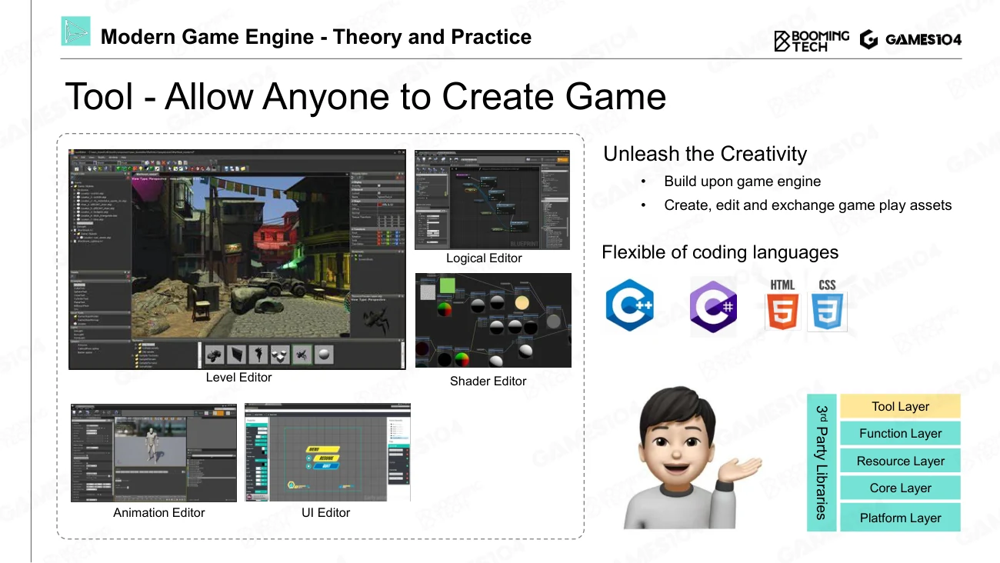
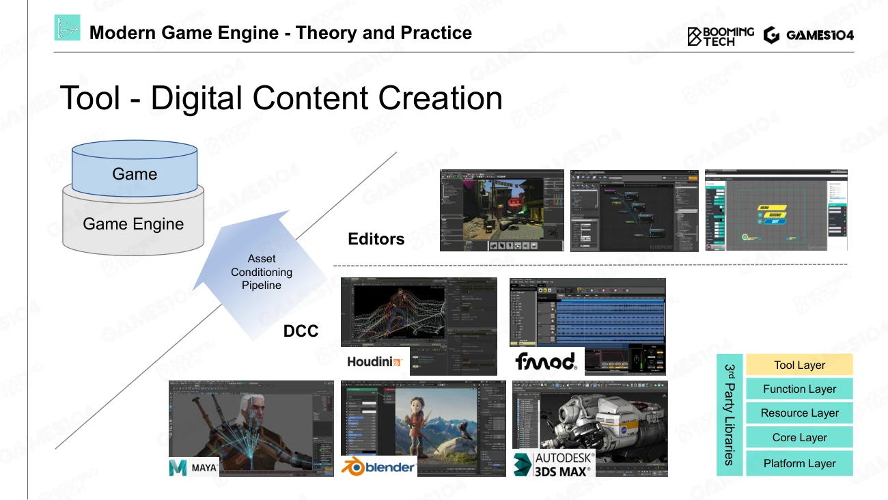
补充说明
课件把工具层放在最上层，呼应“上层易变、下层稳定”：编辑器需求变化最快。
常见坑
编辑器代码被运行时依赖 → 打包后体积膨胀、平台移植困难 → 用宏/模块隔离编辑器代码（UE 的
WITH_EDITOR）。中间件 API 直接散布在业务代码 → 替换中间件成本极高 → 用引擎自己的接口包一层。
DCC 原始文件直接进运行时 → 加载慢、格式不统一 → 必须经过导入/调理管线生成
.ast类资产。
UE / Unity 落地
UE 的 Editor 模块与
WITH_EDITOR宏隔离编辑器代码；UAssetImportData记录 DCC 来源。Unity 的 Editor 文件夹与
#if UNITY_EDITOR隔离编辑器脚本；Asset Postprocessor 对应资产调理管线。
077. 分层架构的收益与 Pilot 迷你引擎实践
课件用一页总结 为什么分层：
- 解耦与降低复杂度（Decoupling and Reducing Complexity）：下层独立于上层，上层不知道下层实现。
- 应对演进需求（Response for Evolving Demands）：上层演进快，下层稳定。
这两条不是口号，而是工程约束：它决定了代码评审时“这段代码该放哪层”的判断标准，也决定了编译依赖方向（依赖只能向下）。
为了把抽象落地，课程提供了 Pilot 迷你引擎：C/C++ 编写，运行时约几万行、编辑器约几万行，严格遵循五层架构，支持 Windows/Linux/MacOS（M1 进行中）。功能包括基础编辑（增删物体、移动/缩放/旋转）、角色控制、相机。发布计划分阶段：第一版含编辑器、角色/相机、渲染器、资源系统、PIE（Play in Editor）；后续随课程发布动画系统、碰撞系统、玩法与脚本系统、参数编辑、更多图形特性。源码在 GitHub BoomingTech/Pilot。
课件的最终 takeaways 只有三句：引擎是分层架构设计的；下层更稳定、上层更可定制；虚拟世界由一组时钟（ticks）构成。 这三句就是本讲的骨架。
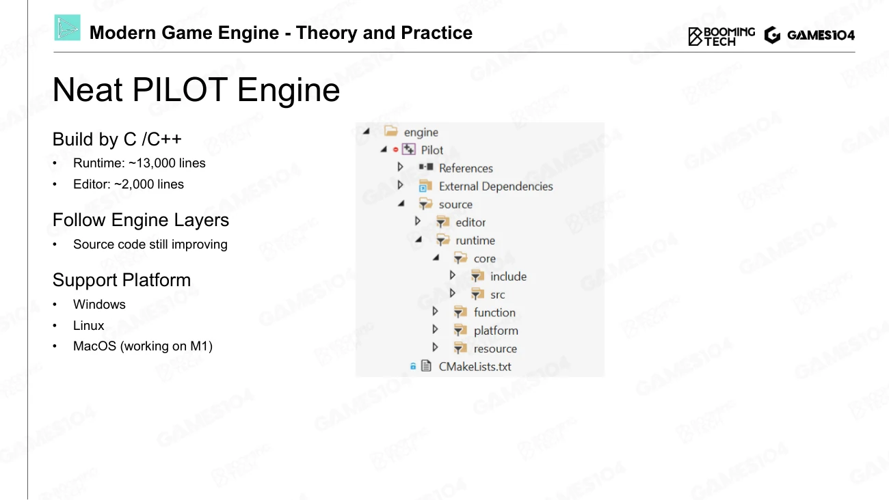
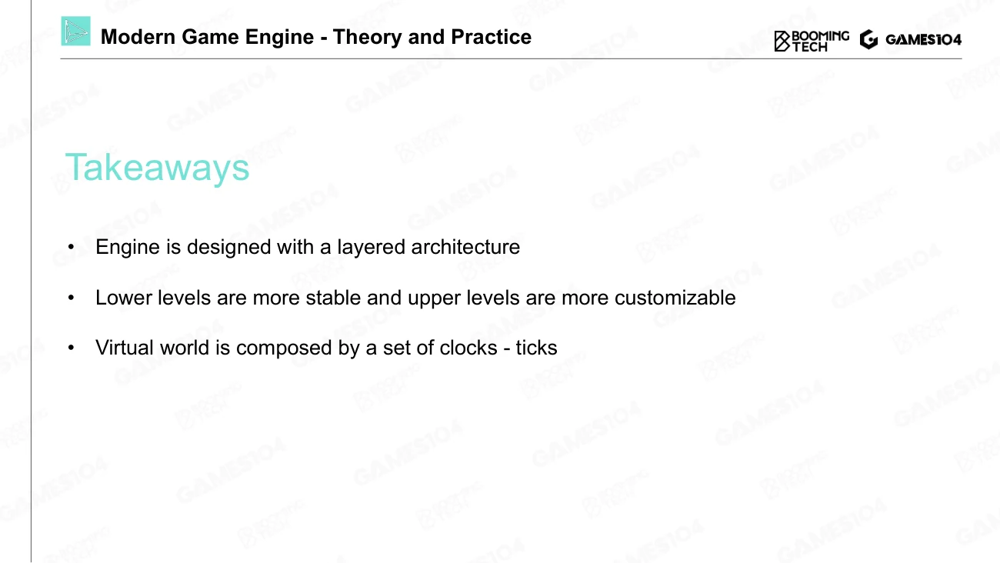
补充说明
Pilot 的发布计划随课程推进，具体行数以仓库为准，课件给的是量级。
常见坑
只记层名不理解依赖方向 → 写出上层被下层 include 的代码 → 用编译依赖检查（如 include 图）验证依赖只向下。
把 Pilot 当玩具不看源码 → 错过“分层如何落地”的最佳样本 → 对照本讲逐层读 Pilot 目录结构。
UE / Unity 落地
UE 的
.Build.cs模块依赖显式声明，天然强制“依赖只向下”；可用它检查是否出现反向依赖。Unity 的 Assembly Definition（asmdef）同样可以约束模块依赖方向。
引擎对照表
| 概念 / 效果 | Unreal Engine | Unity |
|---|---|---|
核心层数学/容器 |
|
|
资源导入与 GUID |
|
|
游戏循环与 tick |
|
|
多线程渲染 | RenderThread、 | SRP RenderThread、 |
平台层图形抽象 | RHI 模块 |
|
工具层编辑器隔离 | Editor 模块、 | Editor 文件夹、 |
术语双语表
| English | 中文 | 说明 |
|---|---|---|
| Layered Architecture | 分层架构 | 把系统按稳定性与职责分成多层，依赖只向下。 |
| Meta Asset (.ast) | 元资产文件 | 资源导入后的统一中间格式，运行时读取更快。 |
| GUID | 全局唯一标识符 | 资源引用的稳定 ID，避免路径改名导致引用断裂。 |
| Handle | 句柄 | 资源的间接引用编号，屏蔽内存地址变化。 |
| Game Loop / Tick | 游戏循环/心跳 | 每帧依次驱动输入、逻辑、动画、物理、渲染的循环。 |
| RHI | 渲染硬件接口 | 平台层对图形 API 的抽象，屏蔽 GPU 与 SDK 差异。 |
| UMA | 统一内存访问 | CPU/GPU 共享内存的硬件架构，影响拷贝策略。 |
| Memory Arena | 内存竞技场 | 整块分配、整块释放的分配器，适合帧级临时数据。 |
| DCC | 数字内容创作工具 | Maya/Blender/Photoshop 等美术工具，产出原始资产。 |
| Asset Conditioning Pipeline | 资产调理管线 | DCC 到引擎之间的格式转换、压缩、LOD 生成流程。 |
课后练习
01 判断以下代码应放在哪一层，并说明理由：(a) 一个求向量叉积的函数；(b) 读取 Windows 注册表获取安装路径；(c) 角色跳跃的玩法逻辑；(d) 把 PNG 纹理压缩成 BC7 的导入器。
查看答案
提示：
问两个问题：依赖操作系统/硬件吗？会被玩法频繁改动吗？
(a) 核心层（数学库）；(b) 平台层（文件系统/平台服务）；(c) 功能层或脚本层（玩法逻辑，易变）；(d) 资源层（资源导入管线）。
02 课件说“Handle vs Post Address”。请解释为什么资源系统用句柄而不是直接返回内存指针，并举一个会出问题的场景。
查看答案
提示：
想想资源被卸载、重新加载、内存整理时地址会怎样。
句柄是间接引用，资源实际内存地址变化时句柄不变。若直接返回指针，资源被卸载后指针悬空；或内存整理/重载后指针失效，导致崩溃。句柄系统还能做引用计数与生命周期管理。
03 一个 tick 中依次执行 input、logic、animation、physics、render。若物理步进耗时过长导致帧率下降，你会如何调整架构？
查看答案
提示：
参考课件的多线程图：LogicThread、SimulationThread、RenderThread。
把物理放到独立的 SimulationThread 或使用固定步长+插值；逻辑线程与渲染线程并行，渲染线程消费上一帧快照；必要时降低物理更新频率或做异步物理。
04 为什么核心层要“避免内存碎片”并“把数据放一起”？请从缓存局部性角度解释，并给出一个容器设计建议。
查看答案
提示：
缓存行、顺序访问、指针跳转。
CPU 按缓存行读取，连续内存顺序访问命中率高；碎片和指针跳转导致缓存未命中、性能下降。建议用连续内存容器（如 std::vector 存值）或 SOA 布局，避免每帧大量小对象分配。
05 对照 UE 或 Unity，列出三个能体现“分层架构”的具体模块，并说明它们分别属于哪一层。
查看答案
提示：
看引擎源码目录或模块名。
示例（UE）：Runtime/Core（核心层）、Runtime/RHI（平台层）、Editor（工具层）、Runtime/Engine 的资源加载（资源层）。Unity：UnityEngine.CoreModule（核心层）、UnityEngine.Rendering（功能层）、Editor 文件夹（工具层）。